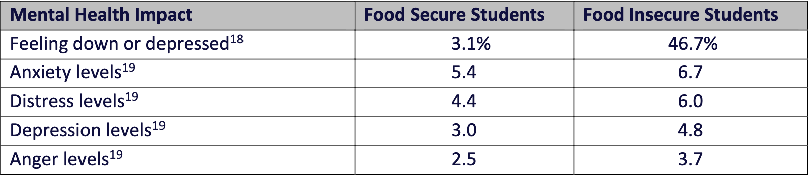
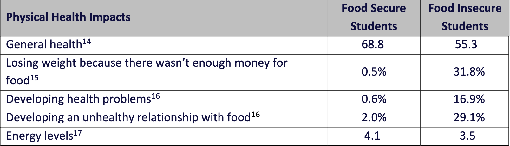

About 17% of University of Maryland students experienced low levels of food security, according to a study released in 2019 by the university’s counseling Center Research Unit, with 20% of students experiencing food insecurity in the year prior.
Madison Korman
“Not having regular access to a variety of foods affects every aspect of a student's wellness,” said UMD registered dietician Jane Jakubczak.
Jakubczak, a registered dietician that has worked at the University of Maryland for 20 years, works with the University Health Center to help students establish a healthy relationship with food and their body.
Table 7: Mental Health Impacts of Food Insecurity (University of Maryland)
“Not knowing if or where your next meal will come from causes extreme stress and anxiety which can lead to depression,” Jakubczak said “Not being able to nourish your body and brain with enough calories and a variety of essential nutrients directly affects a student's ability to focus, retain information and comprehension.”
Table 6: Physical Health Impacts of Food Insecurity (University of Maryland)
Jakubczak said the biggest concern she sees with students’ eating habits is skipping meals. Oftentimes, students will skip meals throughout the day, then at night may blame themselves for not having the willpower to make nutritious decisions.
She said that if someone is not getting nourishment throughout the day, they will crave something quick at night to be fueled with energy and ultimately consuming more sugar and fat. “This is our body’s defense against starvation,” Jakubczak said.
(Women's Fitness)
The University of Maryland offers various resources such as The Campus Pantry and Peer Nutrition Coaching at the Health Center to try to combat the issue through individualized nutrition planning and access to free food. The Peer Nutrition Coaching aims to support students through individualized planning to better form healthy eating habits. Jakubczak said they take into account the students' likes and dislikes, schedule, cooking skills and interest, and access to food to help the student come up with a way of eating that fits their life.
Free food is available at The Campus Pantry is supplied by Terp Farm, located about 15 miles from campus at the College of Agriculture and Natural Resources. In addition to providing free food for students, The Campus Pantry also hosts a teaching kitchen where they teach students new recipes.
The Campus Pantry is located on the ground floor of the South Campus Dining building and is open Monday, Wednesday, and Friday from 11 a.m. to 4 p.m. All current students with a UMD ID card are eligible. Charlay Guarshow,a senior secondary education and studio arts double major, said in previous semesters, she went to the Campus Pantry every day they were open and continues to go about once a week.
University of Maryland Campus (Madison Korman)
“I find it beneficial,” Guarshow said. ”I think there’s times when I don’t have the time or money to get food anywhere on campus so I just go here because it’s quick.” Guarshow said she tends to get frozen food or prepared meals at the pantry because it is quick and easy for her to eat. Guarshow has attended multiple events at the teaching kitchen where she learned quick and easy recipes.